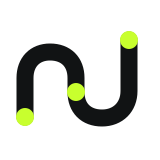
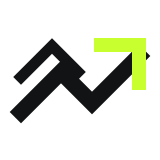

OPTION A / RECOMMENDED
Trace
ひとつの記録が軌跡になり、次の判断へ上昇する形。小文字のnを直接描かず、3つの節点と一本の流れでnunokenを象徴します。
RECORDFLOWDISTINCTIVE
文字から独立し、小さくても識別できるワンポイント。アパレル、アプリアイコン、製品画面のすべてで成立することを基準にしています。

ひとつの記録が軌跡になり、次の判断へ上昇する形。小文字のnを直接描かず、3つの節点と一本の流れでnunokenを象徴します。
データが中心へ集まり、再び現場へ返る循環を表現。円を閉じ切らないことで、継続する分析と拡張性を示します。

異なる速度の3本の軌道が、同じ方向へ進む姿。競技の推進力と、複数のデータをひとつの判断へまとめる動きを表現します。
3案とも特定競技のボールやコートを直接描いていません。Handball Analyzer以外の製品が増えても、nunokenブランドの共通シンボルとして使える設計です。採用後に形状・線幅・余白を精密調整します。